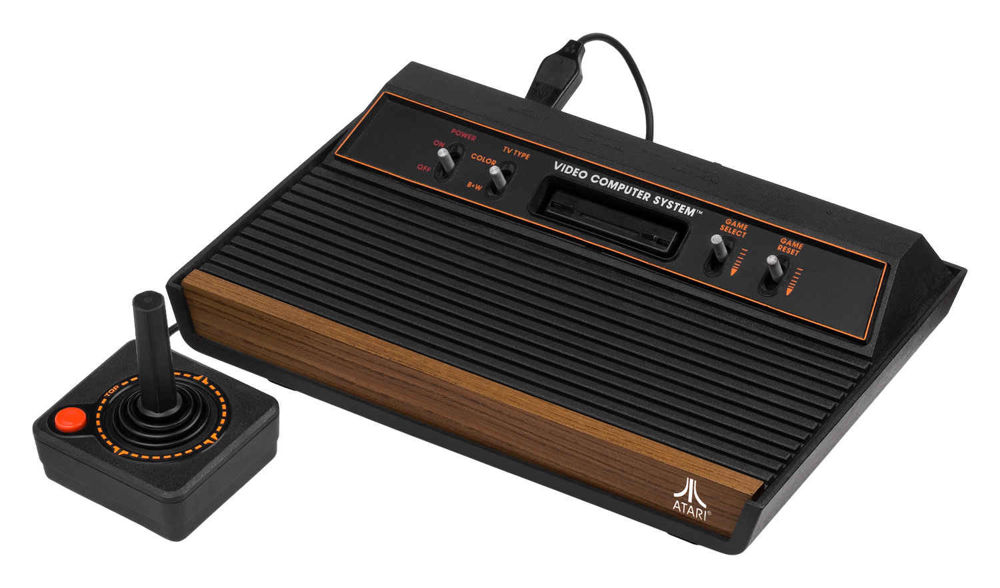
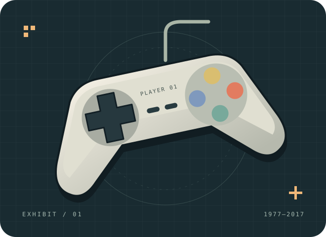
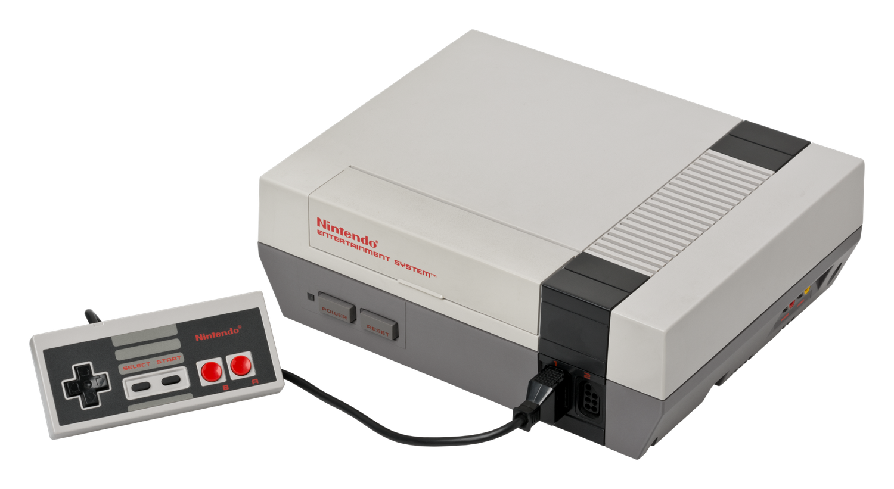
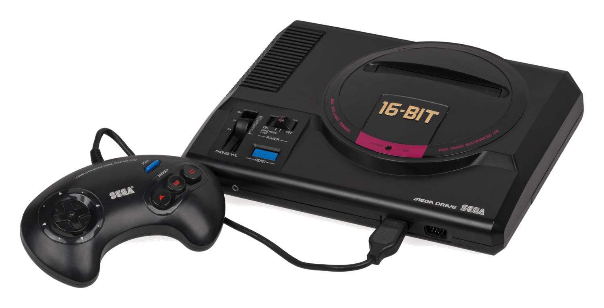
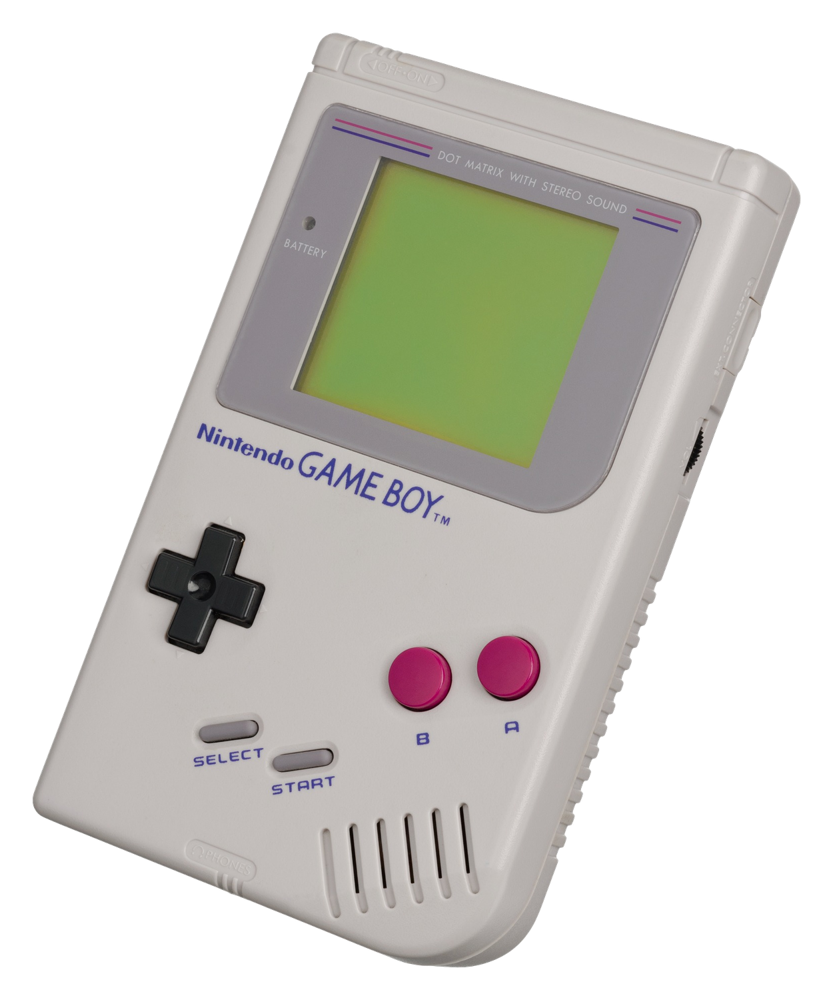
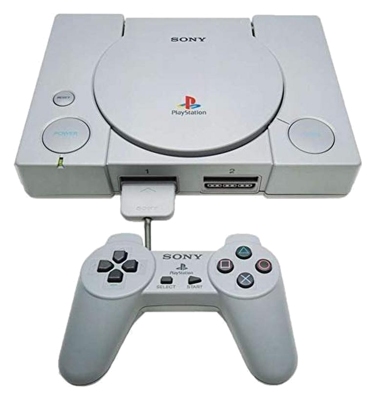
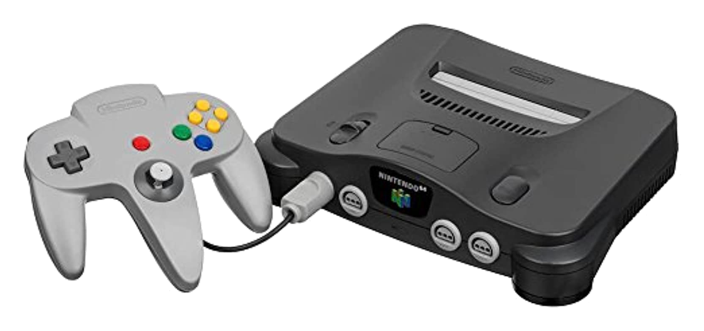
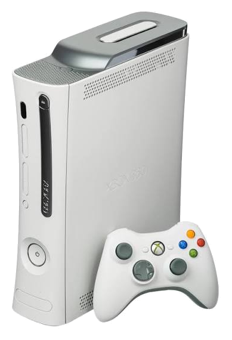
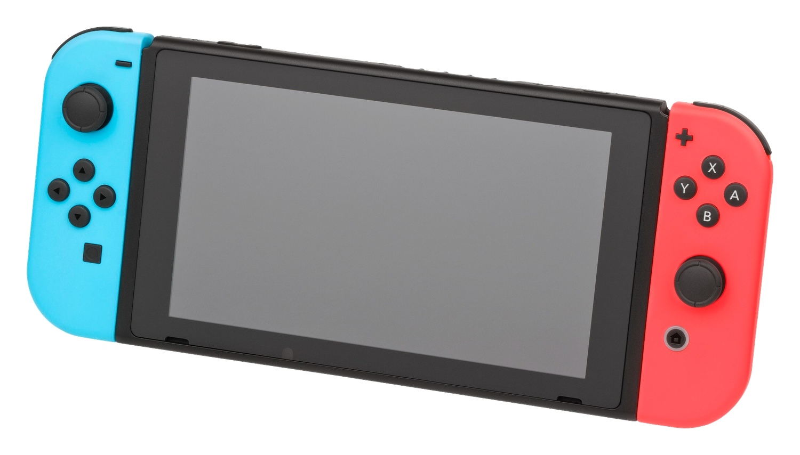

01Atari 2600
Interchangeable cartridges let players enjoy different games on a single home console.
THE VIRTUAL CONSOLE MUSEUM
From the first cartridge-based home gaming hits to portable hybrid consoles. Explore four decades of play, design and innovation.
Explore the collection
01 / ABOUT THE EXHIBITION
This virtual exhibition presents eight iconic video game consoles and explores how the way we play has changed over time.
From interchangeable cartridges and portable screens to disc-based games, online communities and hybrid devices, each exhibit highlights a different step in gaming history.
The years represent each system’s first release, except the NES, which is shown with its 1985 North American release. Some photographs show later revisions of the original consoles.
02 / THE COLLECTION
Explore a selection of consoles in chronological order, from the cartridge era to hybrid gaming.

01Interchangeable cartridges let players enjoy different games on a single home console.

02The NES helped revive the North American home video game market and introduced enduring game franchises.

03Known as the Genesis in North America, Sega’s console brought fast-paced arcade-style games to living rooms.

04A portable design, interchangeable cartridges and a monochrome screen made handheld gaming accessible.

05Sony’s first console used CD-ROMs and helped popularize 3D games for a wide audience.

06The Nintendo 64 featured four built-in controller ports and focused on real-time 3D gameplay.

07The Xbox 360 expanded online multiplayer and digital game distribution through Xbox Live.

08A hybrid console that can be used as a handheld device or connected to a television.
03 / INTERACTIVE SHOWCASE
Move through the collection at your own pace, or let the slideshow bring the exhibits to you.
1977 · Atari
Interchangeable cartridges let players enjoy different games on a single home console.
Ready to start